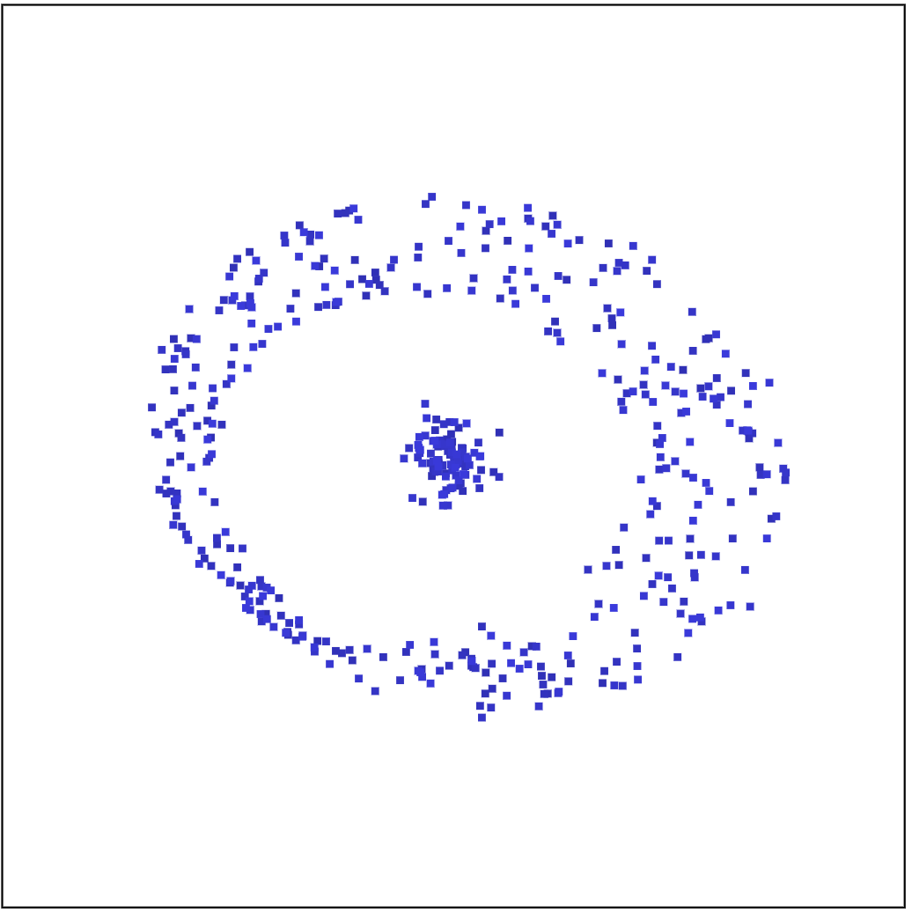
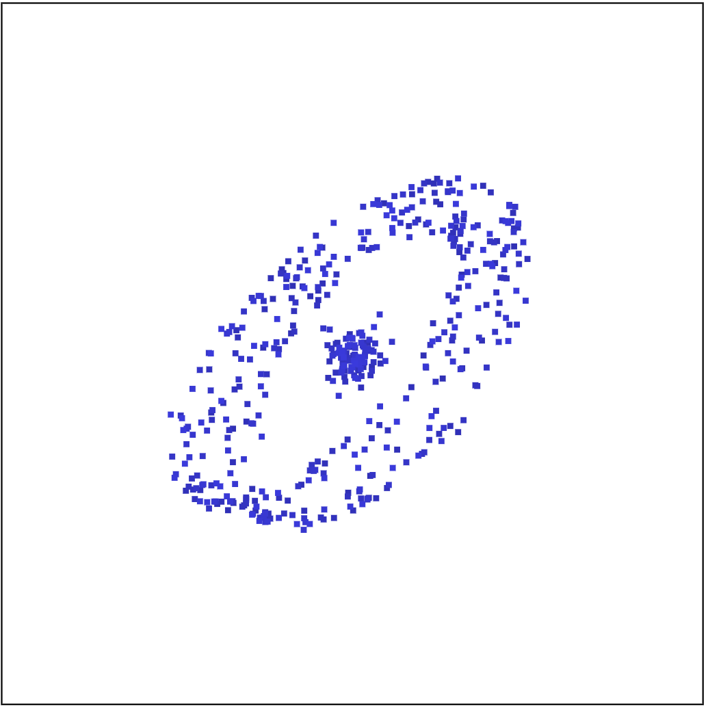
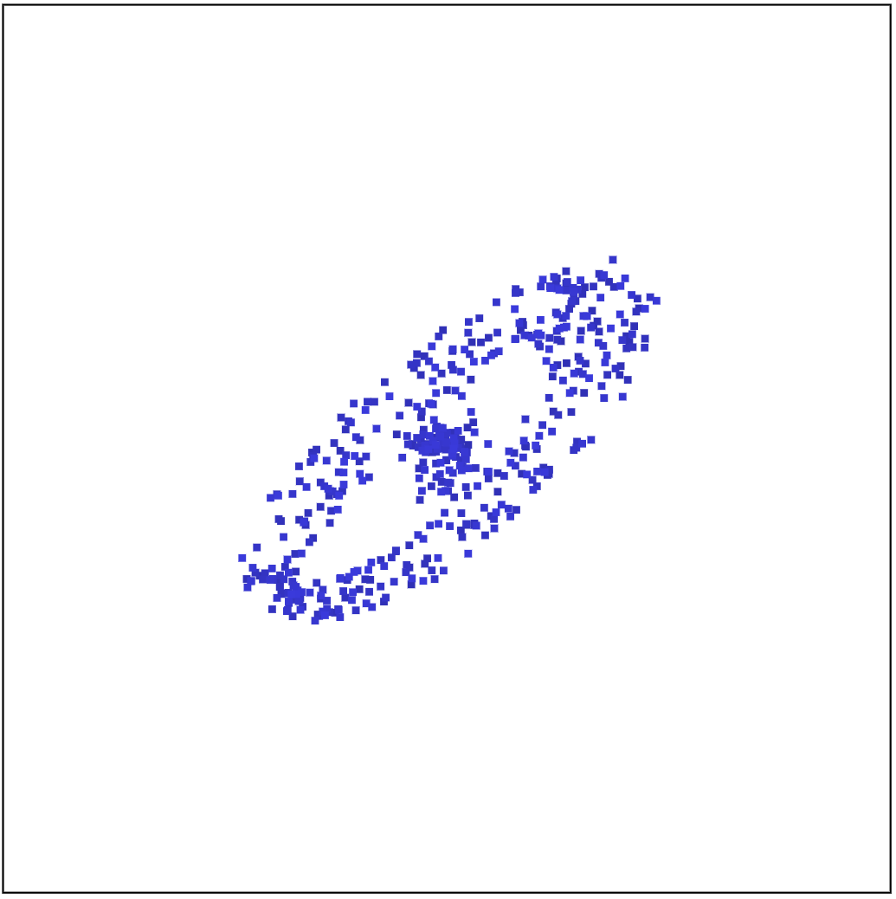
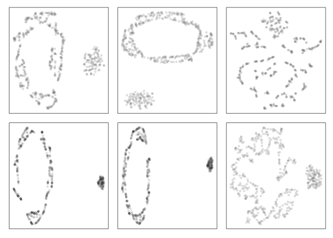

The cardinalR package provides functionality for generating simulation high-dimensional datasets for use in various Nonlinear dimension reduction techniques.
Installation
You can install the development version of cardinalR from GitHub with:
# install.packages("devtools")
devtools::install_github("JayaniLakshika/cardinalR")Example
head(mobius_clust_data, 5)
#> # A tibble: 5 × 5
#> x1 x2 x3 x4 x5
#> <dbl> <dbl> <dbl> <dbl> <dbl>
#> 1 -1.02 3.57 -0.373 0.00687 -0.0139
#> 2 0.793 -3.56 0.620 -0.0261 -0.0457
#> 3 -1.91 -3.91 -0.533 -0.0232 -0.0122
#> 4 -2.79 2.94 -0.364 0.0415 0.0214
#> 5 -1.70 -3.59 0.277 -0.00686 0.00410|  |  |  |
You can find the high-dimensional view in here.
tSNE (t-distributed Stochastic Neighbor Embedding) and UMAP (Uniform Manifold Approximation and Projection) representations of mobius_clust_data are shown below.

Copyright
This package is licensed under the MIT license.